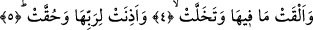

3. Yer dümdüz edildiği,
Yani düz bir yaprak şeklini alacak şekilde dağ ve tepelerinin yok edilip dümdüz hale
getirildiği veya yaratıkların üzerinde hesaba çekilmeleri için durmaları amacıyla
yirmibir cüz’den doksandokuz cüz’e genişletilip düzlendiği zaman... Eğer yeryüzü
böylesine düzlenip genişletilmezse yaratıkları almaz.
Bir hadis-i şerifte şöyle deniyor: “Kıyamet günü olunca Allah yeryüzünü bir deriyi
çekip uzatır gibi uzatacaktır. Ta ki insanlardan her fert ayağını koyacak bir yer
bulabilsin.” [52] Yani orada hesab vermek üzere duracak yaratıkların çokluğu ifâde
olunmaktadır. Hadiste geçen “derinin gerilip uzatılması” örneğinin verilmesi şundandır:
Deri uzatıldığı zaman bütün kırışık ve buruşuklukları kaybolup dümdüz hale gelir. İşte
yeryüzü de aynen böyle olacaktır.
Bazı rivâyetlerde Ukaz derisinin uzatılmasından sözedilmektedir. Kamus’ta ifâde
edildiğine göre Ukaz, Nahle ile Taif arasında bir sahra pazarının adıdır. Bu pazar her yıl
Zilkade ayında kurulur ve yirmi gün açık kalırdı. Bütün arap kabileleri bu pazarda
toplanarak birbirleriyle öğünürlerdi ve karşılıklı olarak birbirlerine şiirler okurlardı.
İşte el-ediymu’l-ukazi tâbiri buradan kalmıştır.
4-5. İçinde bulunanları atıp boşaldığı ve Rabbini dinleyip O’na hakkıyla itâata
mecbur kılındığı vakit (insanoğlu yaptıkları ile karşılaşır).
“İçinde olanları dışarı atarak boşaldığı” yâni içinde bulunan ölüleri ve hazineleri
dışarıya atarak boşaldığı zaman. Bu ifâde bize Zilzal sûresindeki “Yeryüzü
ağırlıklarını dışarı çıkardığı zaman” (Zilzal 99/2) ifâdesini hatırlatmaktadır.
Okuduğumuz her iki ifâde de isnâd-ı mecâzî kabilindendir. Yoksa yerin içindekileri
atması veya dışarıya çıkarması düşünülemez. Bunları atan ve dışarıya çıkaran aslında
Allah’tır.
Burada “hazineler Deccal zuhûr ettiği zaman çıkarılacaktır, kıyamet günü
çıkarılmayacaktır. Burada neden kıyamet günü çıkarılacağına işâret ediliyor?”
denilecek olursa bu soruya cevabımız şöyle olur: Kıyamet günü uzun bir süreçtir. Bu
günü Deccal’ın ortaya çıkacak olduğu andan başlatmak mümkündür. Eğer kıyamet
gününü bu andan başlatırsak ifâdede herhangi bir çelişki kalmaz. Çünkü Deccal’ın
ortaya çıkması, kıyametin büyük alâmetlerindendir. Şu halde hazinelerin yerin altından
üstüne çıkarılması kıyamet vaktinin yaklaştığı anda, ölülerin topraktan dışarıya
çıkarılması ise dirilme esnasında olacaktır.
“Tahallet” yer içinde bulunanlardan adamakıllı boşaldığı ve içinde hiçbir şey
kalmadığında” demektir. Bu ifâde yeryüzü içinde ne varsa tümünü dışarı çıkarmakta
büyük bir titizlik göstereceği imajını uyandırmaktadır. Bu izlenim, fiilin kalıbından